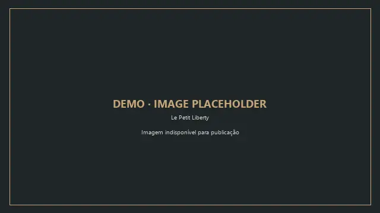
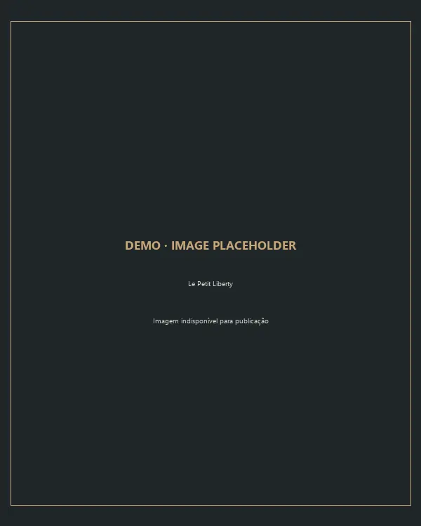
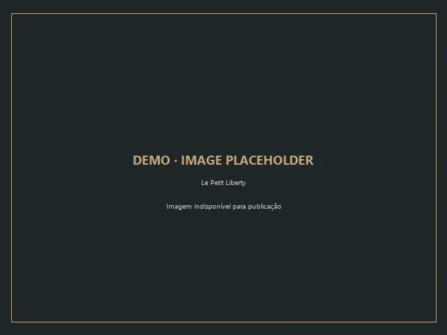

Ao longo das fotos
Às vezes se fala de uma ligação com um antigo bistrô “Liberty”. Nenhuma fonte consultada documenta isso: aqui não há data de abertura, origem nem antes e depois. Apenas três fotos datadas, publicadas por visitantes.
-
2016

Imagem placeholder demonstrativo. O letreiro vermelho já está lá, no ano em que a empresa “Le Petit Liberty” é registrada neste endereço.
-
2017

Imagem placeholder demonstrativo. Sobre a mesa, um cardápio cor de madeira, com o endereço do café. O conteúdo não aparece na foto.
-
2020

Imagem placeholder demonstrativo. O toldo, as vitrines marrons, os cartazes culturais: a fachada tal como aparece no início desta página.